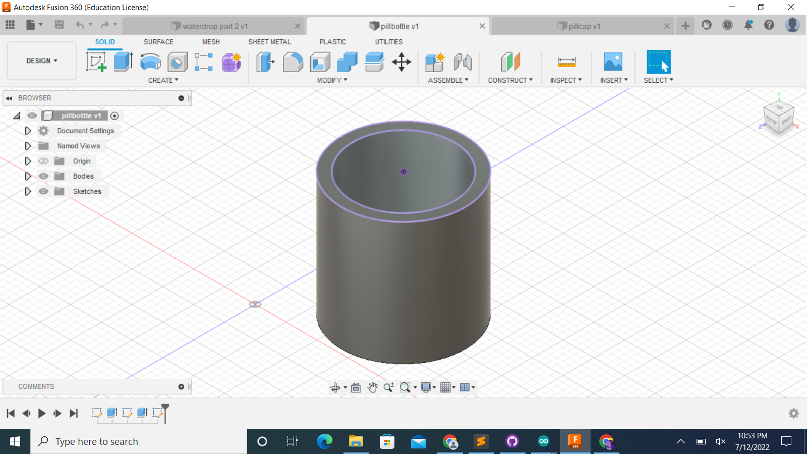
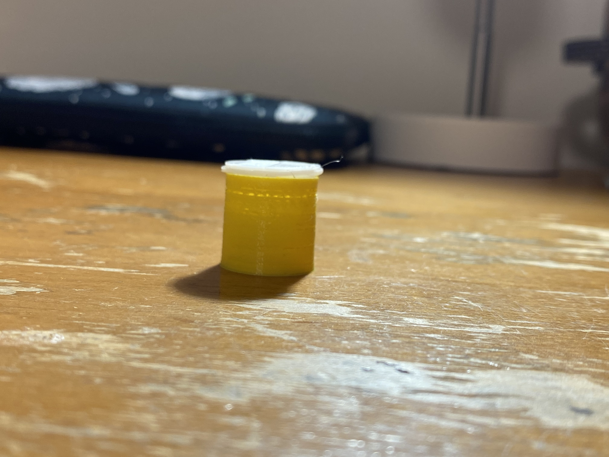
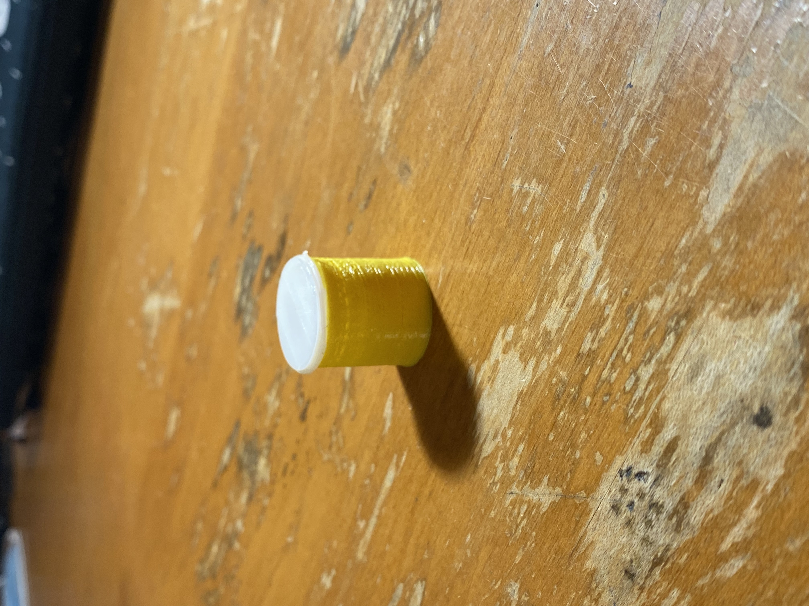

### Week 5
For week 5, our assignment was to 3D print something, so I decided to make a pill bottle. At first I made the design on Onshape because Fusion 360 wasn't working for me, but then after desgining it I realized it did it in inches and I needed to do it in milimeters. Once Fusion 360 started working again, I remade the model in milimeters.

<img src="pillscreenshot (2).png" width="300" height="300">
The pill bottle came out very small, and yet it took over 40 minute to print the whole thing. I wish I had been able to have more time, but I had make it really last minute because I couldn't download anything. I'm still happy I got to use the machine though, I hope I get to learn how to use it better. This is the final product.

